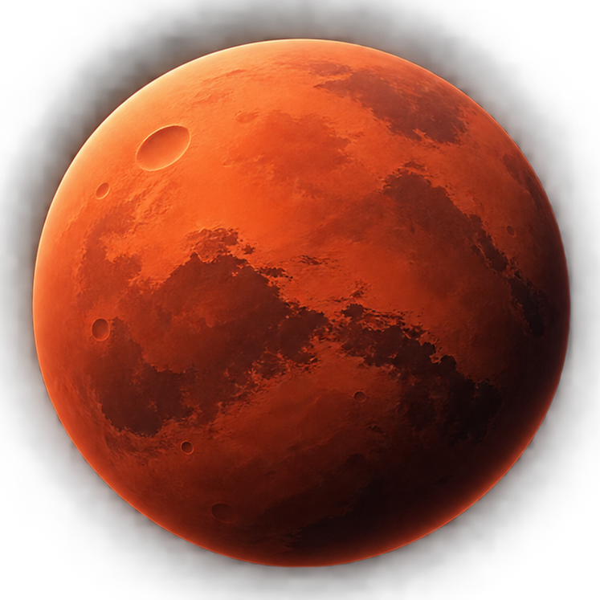

ANALOG(IA)

ANALOG(IA) — Identify Earth Locations that Analog the Permanent Moon Base Locations and Mars
Current phase: Martian topographic visualization (NASA MOLA 128 ppd + USGS Viking MDIM 2.1) and linking with scientifically validated terrestrial analogs.